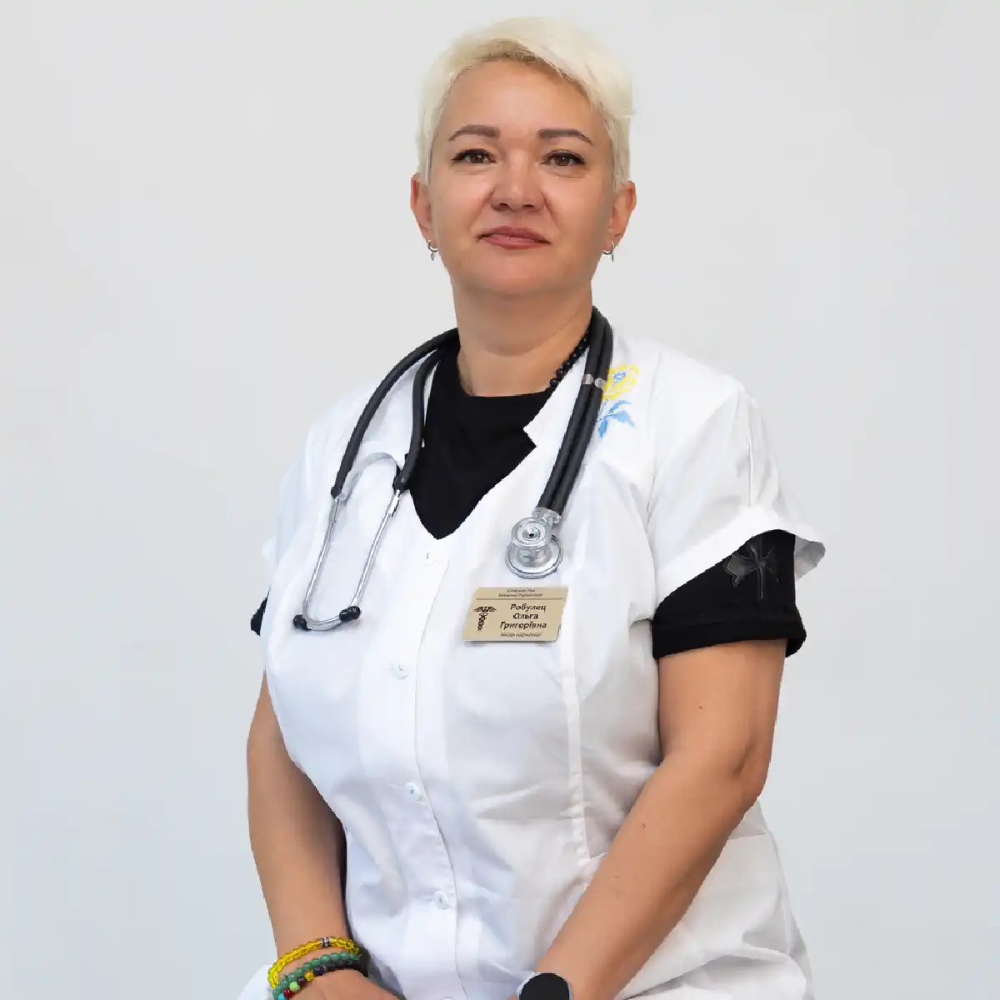

+38(068)
79 72 782
+38(068)
79 72 782Капельница от наркотиков Харьков
Первый шаг к трезвой жизни


Бесплатная консультация, работаем круглосуточно 24/7
Первый шаг к трезвой жизни

Дата написания: 30 авг. 2025 г.
Последнее обновление: 2 окт. 2026 г.
Капельница после употребления наркотиков может применяться как часть медицинской помощи при обезвоживании, нарушении водно-электролитного баланса и некоторых других состояниях. Однако необходимость инфузионной терапии определяется только после осмотра пациента. Вид употреблённого вещества, его количество, сочетание с алкоголем или лекарствами и текущее состояние человека существенно влияют на тактику лечения. Капельница от наркотиков в Харькове может проводиться на дому при относительно стабильном состоянии пациента или в условиях стационара, если требуется более тщательное наблюдение. При потере сознания, судорогах, выраженном нарушении дыхания, боли в груди, тяжёлом психомоторном возбуждении или других опасных симптомах приоритетом является экстренная медицинская помощь, а не обычная домашняя инфузия.
Обратиться за консультацией нарколога желательно при выраженной слабости, тревоге, бессоннице, треморе, тошноте, рвоте, обезвоживании, нарушении координации или значительном ухудшении самочувствия после употребления психоактивных веществ. Осмотр также требуется, если пациент употреблял несколько веществ одновременно или неизвестно, что именно было принято. Особое внимание необходимо при сочетании наркотиков с алкоголем, бензодиазепинами, снотворными или другими препаратами. Врач определяет, достаточно ли помощи на дому или пациенту требуется наркологический стационар.
Нарколог на дом в Харькове может провести первичную оценку состояния пациента после употребления наркотиков. Специалист уточняет, какое вещество предположительно употреблялось, когда это произошло, в каком количестве, были ли дополнительные препараты или алкоголь. Также оцениваются сознание, дыхание, артериальное давление, пульс, температура и другие показатели. После осмотра врач определяет необходимость инфузионной терапии и решает, возможно ли безопасно проводить лечение наркомании на дому. При признаках тяжёлой интоксикации пациенту может быть рекомендована госпитализация.
Перед инфузионной терапией важно определить не только факт употребления наркотика, но и текущее состояние организма. Врач обращает внимание на уровень сознания, частоту дыхания, давление, пульс, температуру тела, наличие рвоты, обезвоживания, судорог, боли в груди или психических нарушений. Дополнительно учитываются возраст, хронические заболевания сердца, печени и почек, лекарственные препараты и предыдущие эпизоды интоксикации. Только после такой оценки определяется, действительно ли пациенту необходима капельница для детоксикации.
Универсального состава капельницы от наркотиков не существует. Инфузионная терапия подбирается индивидуально в зависимости от клинической ситуации. При наличии показаний могут использоваться растворы для восполнения жидкости и коррекции отдельных нарушений водно-электролитного баланса. Дополнительные лекарственные препараты назначаются только после оценки симптомов и возможных противопоказаний. Нельзя самостоятельно повторять состав капельницы, который ранее применялся другому пациенту или при другой интоксикации. Детоксикация от наркотиков должна проводиться с учётом конкретного вещества и состояния пациента.
Детоксикация от наркотиков в Харькове направлена прежде всего на медицинскую стабилизацию состояния после употребления вещества или в период его отмены. В зависимости от ситуации она может включать наблюдение, симптоматическую терапию, инфузионное лечение по показаниям и контроль жизненно важных функций. Детоксикация может проводиться дома только при относительно стабильном состоянии. При выраженной интоксикации, психозе, судорогах или нарушении дыхания требуется лечение в наркологическом стационаре. Детоксикация также не устраняет сформировавшуюся зависимость и обычно является только первым этапом лечения.
К опиоидам относятся героин, фентанил, метадон, трамадол, бупренорфин и другие вещества. Основная опасность передозировки этой группы заключается в угнетении дыхания. Если человек не просыпается, дыхание стало редким или поверхностным, появилась выраженная сонливость или потеря сознания, домашняя капельница не является основным методом помощи. При подозрении на передозировку необходима помощь после употребления опиоидов, включая экстренную медицинскую оценку и применение налоксона по показаниям. После стабилизации может потребоваться дальнейшее лечение зависимости от опиоидов.
После амфетамина, метамфетамина или кокаина возможны тахикардия, повышение давления, тревога, паника, бессонница, потливость и выраженное психомоторное возбуждение. В отдельных ситуациях инфузионная терапия может применяться как часть медицинской помощи, однако она не является универсальным средством от действия стимуляторов. При стабильном состоянии врач может назначить капельницу после психостимуляторов по медицинским показаниям. Боль в груди, выраженная одышка, судороги, значительное повышение температуры, тяжёлое возбуждение или спутанность сознания требуют срочной медицинской оценки.
Мефедрон, Альфа-PVP и другие синтетические стимуляторы могут вызывать длительную бессонницу, тревогу, учащённый пульс, повышение давления и выраженное возбуждение. После продолжительного употребления возможны подозрительность, дезориентация, галлюцинации и психотические симптомы. При стабильном состоянии врач может назначить симптоматическое лечение и инфузионную терапию по показаниям. При повторном употреблении может потребоваться лечение зависимости от мефедрона, Альфа-PVP и солей, а при тяжёлом возбуждении, судорогах или гипертермии — стационарная помощь.
После MDMA могут возникать сердцебиение, тревога, повышение температуры, бессонница и нарушения водно-электролитного баланса. Врач обязательно учитывает, сколько жидкости человек уже выпил, поскольку после MDMA опасно не только обезвоживание, но и чрезмерное употребление воды. Капельница после экстази (МДМА) проводится только после медицинской оценки и при наличии показаний. При высокой температуре, судорогах, спутанности сознания или выраженной боли в груди необходима экстренная медицинская помощь.
После марихуаны или других форм каннабиса капельница требуется далеко не каждому пациенту. Чаще медицинская помощь необходима при выраженной тревоге, панической реакции, рвоте, обезвоживании или значительном ухудшении самочувствия. Синтетические каннабиноиды Spice/K2 способны вызывать более тяжёлые и непредсказуемые реакции, включая выраженное возбуждение, спутанность сознания и судороги. При регулярном употреблении может потребоваться лечение зависимости от марихуаны и каннабиса, а при острой интоксикации — медицинская помощь по состоянию.
ЛСД преимущественно изменяет восприятие, тогда как кетамин и фенциклидин обладают выраженным диссоциативным действием. После употребления возможны паника, тревога, дезориентация, нарушение координации, галлюцинации или необычное поведение. Капельница назначается только при конкретных медицинских показаниях. При регулярном употреблении может потребоваться лечение зависимости от кетамина и фенциклидина, а при выраженном психомоторном возбуждении, судорогах или нарушении сознания — срочная помощь.
Немедицинское употребление прегабалина и других лекарственных препаратов также может приводить к интоксикации и зависимости. Риск повышается при сочетании таких средств с алкоголем, опиоидами, бензодиазепинами и другими веществами, угнетающими центральную нервную систему. Врач оценивает сознание, дыхание и общее состояние пациента. После стабилизации при регулярном употреблении может потребоваться лечение зависимости от прегабалина.
Бензодиазепины и барбитураты способны вызывать выраженную сонливость, заторможенность, нарушение координации и угнетение центральной нервной системы. Особенно опасно их сочетание с алкоголем или опиоидами, поскольку может усиливаться угнетение дыхания. При регулярном длительном употреблении нельзя самостоятельно резко прекращать приём некоторых подобных препаратов. Лечение зависимости от бензодиазепинов и барбитуратов должно проходить под медицинским контролем.
Сам факт того, что действие вещества ещё не закончилось, не позволяет автоматически определить, можно ли проводить инфузию. Врач должен установить, какое вещество принято, оценить уровень сознания, дыхание, давление, пульс и риск передозировки. При относительно стабильном состоянии капельница от наркотиков на дому может быть назначена по показаниям. Но если человек не просыпается, плохо дышит, у него появились судороги или выраженная спутанность сознания, обычная домашняя капельница может быть небезопасной.
Налоксон применяется при подозрении на опиоидную передозировку, особенно если у человека значительно угнетено дыхание и сознание. Он действует на опиоидные рецепторы и может временно обратить опасное угнетение дыхания. Налоксон не является универсальным антидотом от кокаина, амфетамина, бензодиазепинов или других не-опиоидных веществ. После применения препарата всё равно требуется помощь при передозировке наркотиками и медицинское наблюдение.
Судорожный приступ после употребления наркотиков является серьёзным симптомом. Причиной могут быть интоксикация стимуляторами, синдром отмены некоторых препаратов, сочетание веществ или другое острое состояние. Во время приступа нельзя пытаться силой разжимать человеку зубы или давать таблетки и воду через рот. Даже если после судорог сознание восстановилось, пациенту может потребоваться срочная госпитализация в наркологический стационар.
Галлюцинации, выраженная подозрительность, дезориентация и психомоторное возбуждение могут наблюдаться после синтетических стимуляторов, фенциклидина, галлюциногенов и некоторых других веществ. В подобном состоянии человек может неправильно воспринимать окружающую обстановку и представлять опасность для себя или окружающих. Родственникам не следует пытаться самостоятельно удерживать агрессивного пациента или силой проводить медицинские процедуры. При выраженных психических нарушениях требуется срочная наркологическая помощь.
После стимуляторов нервная система может длительное время оставаться перевозбуждённой. Пациент жалуется на невозможность уснуть, учащённое сердцебиение, внутреннее напряжение, страх или панические приступы. Не следует самостоятельно сочетать стимуляторы с алкоголем, снотворными или транквилизаторами в попытке уснуть. Врач оценивает тяжесть состояния и определяет безопасную тактику лечения после психостимуляторов.
Повторная рвота может приводить к потере жидкости и электролитов, слабости и ухудшению общего состояния. В такой ситуации врач оценивает степень обезвоживания, возможность пациента самостоятельно пить и наличие других симптомов. При наличии показаний может использоваться капельница для детоксикации от наркотиков. Если рвота сопровождается нарушением сознания, сильной болью, судорогами или другими выраженными симптомами, требуется более тщательное обследование.
Амфетамин, метамфетамин, кокаин и некоторые синтетические стимуляторы способны значительно увеличивать частоту сердечных сокращений и артериальное давление. Небольшое учащение пульса и тяжёлая сердечно-сосудистая реакция — разные ситуации, поэтому состояние должен оценивать специалист. Если появляются боль или давление в груди, выраженная одышка, нарушение ритма, неврологические симптомы или резкое ухудшение самочувствия, необходима экстренная помощь после наркотиков.
Капельница может быть частью симптоматической помощи при некоторых состояниях, но сама по себе не является полноценным лечением наркотической ломки. Тактика зависит от вещества, которое вызвало физическую зависимость. При опиоидной зависимости применяются одни подходы, при зависимости от седативных препаратов — другие. Поэтому лечение ломки от наркотиков должно подбираться индивидуально после осмотра нарколога.
Наркотическая абстиненция может проявляться тревогой, бессонницей, потливостью, болями, тремором, тошнотой и другими симптомами. При наличии обезвоживания или отдельных метаболических нарушений врач может включить инфузионную терапию в общий план лечения. Однако основная терапия синдрома отмены определяется конкретным веществом. Лечение наркотической абстиненции особенно важно проводить под медицинским контролем при зависимости от опиоидов, бензодиазепинов и барбитуратов.
Стационар предпочтителен при нарушении сознания, тяжёлой интоксикации, выраженном психозе, судорогах, нарушении дыхания или нестабильном состоянии. Дополнительными основаниями могут быть сочетанное употребление нескольких веществ, тяжёлые хронические заболевания и невозможность обеспечить безопасное наблюдение дома. В подобных случаях лечение в наркологическом стационаре позволяет круглосуточно контролировать жизненно важные показатели и своевременно менять терапию.
Капельница от наркотиков на дому в Харькове может рассматриваться, когда пациент находится в сознании, стабилен и врач не выявляет признаков тяжёлой интоксикации. Преимущество домашнего формата заключается в возможности получить медицинскую оценку в привычной обстановке без самостоятельной поездки в клинику. Однако безопасность всегда важнее удобства. Если пациенту требуется постоянное наблюдение или существует риск быстрого ухудшения, предпочтителен наркологический стационар в Харькове.
Стоимость капельницы от наркотиков в Харькове начинается от 2499 грн.
Продолжительность процедуры зависит от назначенного раствора, состояния пациента и необходимого наблюдения. Инфузию нельзя ускорять только для того, чтобы быстрее завершить визит. Скорость введения определяется медицинскими показаниями. После окончания капельницы от наркотиков врач повторно оценивает состояние пациента и даёт дальнейшие рекомендации. При тяжёлой интоксикации продолжительность лечения может быть значительно больше времени одной инфузии.
Скорость улучшения зависит от вида вещества, тяжести интоксикации, продолжительности употребления и состояния организма. При обезвоживании или некоторых симптомах улучшение может появиться в течение лечения или после его завершения. Однако детоксикационная капельница не может мгновенно нейтрализовать большинство наркотиков и не гарантирует полного исчезновения симптомов. Если состояние не улучшается или ухудшается, требуется повторная медицинская оценка.
Даже если после детоксикации человек чувствует себя нормально, сформировавшаяся зависимость может сохраняться. Без дальнейшего лечения остаются психологическая тяга, привычное окружение и риск повторного употребления. Следующим этапом должно стать лечение наркотической зависимости, которое может включать консультацию нарколога, психотерапию, медикаментозные методы по показаниям и реабилитацию. Поэтому капельницу правильнее рассматривать как возможный этап стабилизации, а не как полноценное лечение зависимости.
После стабилизации физического состояния важно работать с причинами повторного употребления. Психотерапия при наркотической зависимости помогает пациенту распознавать ситуации, провоцирующие тягу, менять привычные модели поведения и формировать навыки профилактики срыва. При длительной зависимости и повторных рецидивах может быть рекомендована реабилитация наркозависимых. Продолжительность восстановления определяется индивидуально и обычно значительно превышает время, необходимое для одной детоксикации.
При обращении за наркологической помощью пациенты часто хотят сохранить конфиденциальность. Анонимная наркологическая помощь в Харькове может предоставляться в рамках правил конкретного медицинского учреждения и действующих требований к медицинской документации. Домашний выезд позволяет получить консультацию и медицинскую помощь без самостоятельного посещения клиники, если состояние пациента подходит для домашнего лечения. Перед обращением можно уточнить порядок оформления и условия конфиденциальности.
Круглосуточная наркологическая помощь в Харькове может потребоваться после употребления наркотиков, при абстиненции или резком ухудшении состояния. При относительно стабильном состоянии можно обратиться за консультацией нарколога и определить необходимость домашнего осмотра. Если появились потеря сознания, угнетение дыхания, судороги, выраженная боль в груди, тяжёлое возбуждение или другие опасные симптомы, нельзя ожидать обычного планового визита. В таких ситуациях требуется экстренная медицинская помощь, а после стабилизации — дальнейшее лечение наркомании в Харькове.
Телефон для консультации и вызова нарколога на дом в Харькове: +38(050-021-69-57)

Статья проверена экспертом
Богоденко Констянтин
Врач анастезиолог, ординатор
Возможно интересная статья:
Налоксон и экстренная помощь при передозировке опиоидов

Да, мы строго соблюдаем полную конфиденциальность на всех этапах лечения. Информация о пациенте, диагнозе и прохождении терапии не передаётся третьим лицам. Обращение к нам не влечёт постановку на учёт. Вы можете быть уверены в безопасности и анонимности.
Программа лечения разрабатывается индивидуально после консультации со специалистом. Учитываются вид зависимости, её длительность, физическое и психологическое состояние пациента. Такой подход позволяет повысить эффективность терапии и снизить риск срыва. Мы не используем шаблонные решения.
Да, мы сопровождаем пациентов и после основного курса лечения. Проводятся консультации, рекомендации по адаптации и профилактике рецидивов. При необходимости возможна дальнейшая психологическая поддержка. Это помогает сохранить результат и вернуться к полноценной жизни.
Анонимно

Помогли при ломке
Анонимно
Хочу поблагодарить специалистов фирмы «Амбрела плюс» за реальную помощь в сложный период. Обратился в состоянии ломки, было тяжело и физически, и морально. Врачи отреагировали быстро, всё объяснили, поддерживали на каждом этапе. Состояние стабилизировали, стало значительно легче уже в первые часы. Спасибо за профессионализм и человеческое отношение.
Номер телефона:
+380 (68) 797 27 82
+380 (50) 021 69 57
Адрес наркологического центра вашего города уточняйте по
телефону
Работаем в: Киеве, Одессе, Львове, Харькове, Днепре,
Запорожье, Черкассах, Чугуеве, Черноморске, Каменском
Telegram: t.me/umbrellaplus
График работы: Круглосуточно